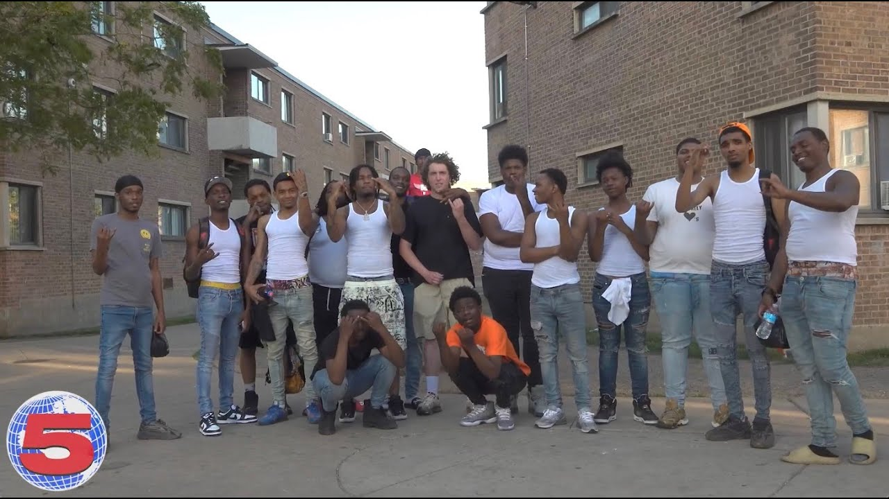

Рэп — музыкальная форма вокальной подачи, включающая в себя «рифму, ритмичную речь и уличный жаргон»[4], которая исполняется или произносится нараспев различными способами, как правило, под фоновый бит или музыкальный аккомпанемент[4]. Компоненты рэпа включают в себя «содержание» (то, что говорится), «флоу» (ритм, рифма) и «подачу» (каденция, тон)[5]. Рэп отличается от устной поэзии тем, что обычно исполняется под музыкальное сопровождение[6]. Рэп — основной элемент хип-хоп-музыки, обычно ассоциируется именно с этим жанром и даже служит его метонимией; однако истоки рэпа на много лет предшествовали появлению хип-хоп-культуры.>
В СССР рэп появился в 1980-е годы с развитием дискотек и деятельности диск-жокеев. В 1983−1984 годах были зафиксированы первые эксперименты с рэпом. Однако рэп, в отличие от рока, тогда не прижился[51]. Впервые рэп на русском языке прозвучал из уст куйбышевского диск-жокея Александра А́строва[52][53][54][55][56][57][58][59][60]. В конце 1983 года А́стров предложил местной рок-группе «Час пик», в которой он работал звукооператором и был автором большинства текстов, записать для его дискотеки «Канон» несколько оригинальных номеров для областного конкурса дискотек в Тольятти. В качестве музыкальной основы для эксперимента был взят сингл британского рок-музыканта Captain Sensible «Wot»[en] (1982), а также сингл американской рэп-группы The Sugarhill Gang «Rapper’s Delight» (1979)[52][57]. Рэп был исполнен А́стровым в стилистике группы The Sugarhill Gang, однако не нёс однозначной смысловой нагрузки[61]. Копия записи случайным образом отправилась в Москву, вернувшись обратно в Куйбышев через год в виде 25-минутного магнитоальбома «Рэп» (1984)[62][63].
В 1985 году рэп стал появляться в творчестве рок-исполнителей. Константин Кинчев из рок-группы «Алиса» исполнил речитатив в песне «Меломан», завершавшийся фразой «И вот пою ещё одну песню в стиле рэп»